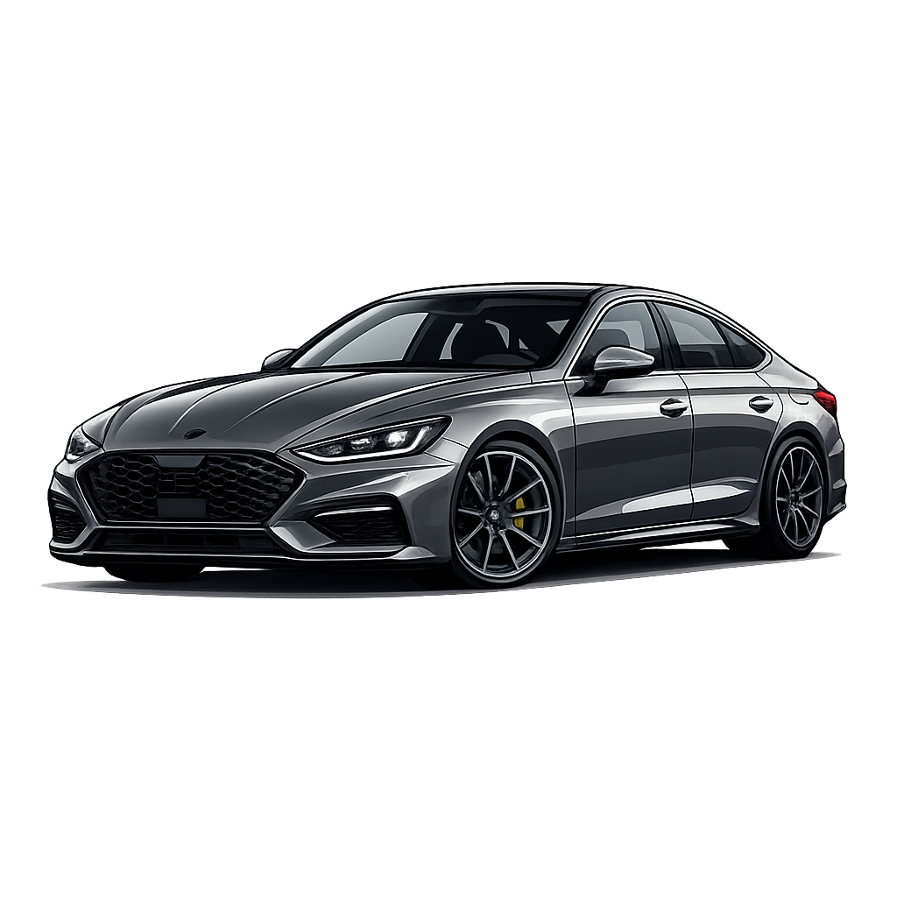

S U V
SUV arabalar, hem şehir içi konfordan ödün vermeyen hem de zorlu arazi koşullarına uyum sağlayabilen, yerden yüksek ve geniş hacimli çok yönlü taşıtlardır.
Spor arabalar, hız, yüksek performans ve aerodinamik sürüş dinamiklerini ön planda tutan, genellikle iki kapılı ve alçak tasarımlı heyecan odaklı taşıtlardır.

S E D A NSedan arabalar, motor, yolcu ve bagaj bölümleri birbirinden tamamen ayrılmış üç kutulu tasarıma sahip, genellikle dört kapılı ve geleneksel aile kullanımına uygun klasik binek taşıtlardır.
Van tipi arabalar, hem geniş ailelerin konforlu seyahat etmesi hem de ticari yük ve yolcu taşımacılığı için tasarlanmış, maksimum iç hacim ve pratiklik sunan yüksek tavanlı taşıtlardır.